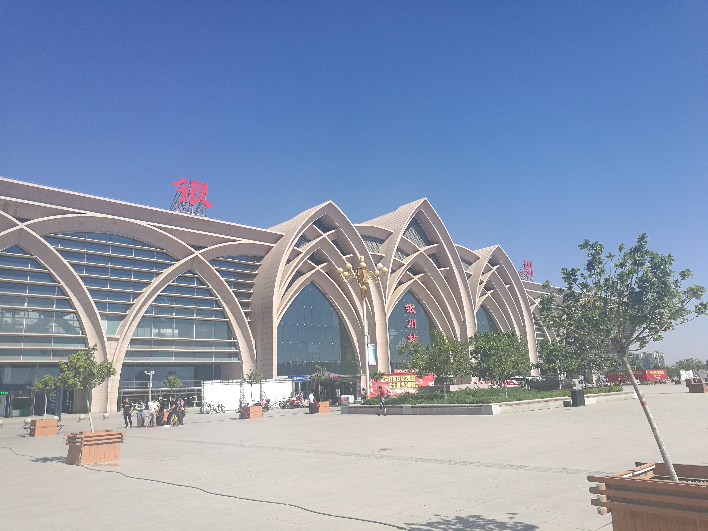
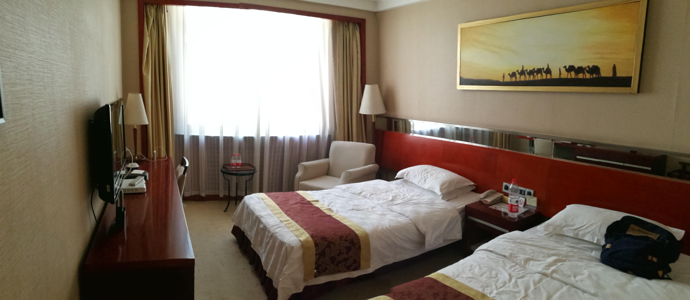
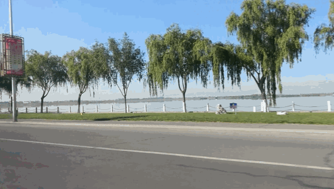
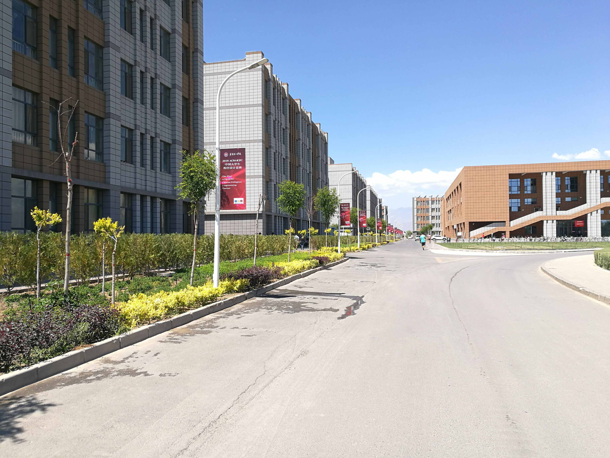
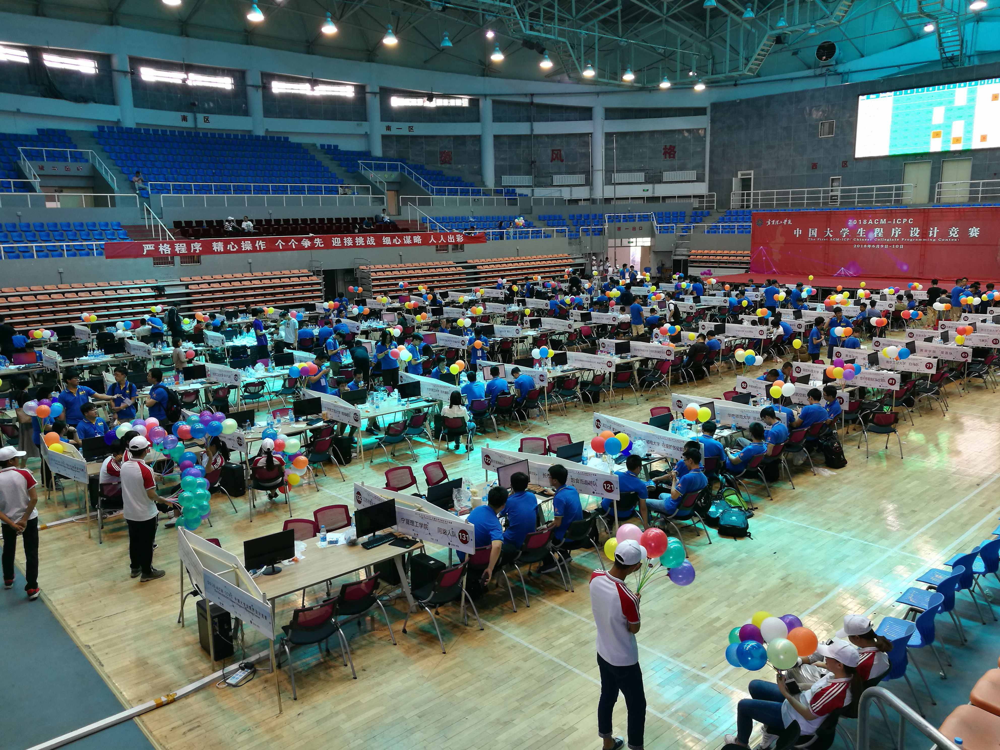
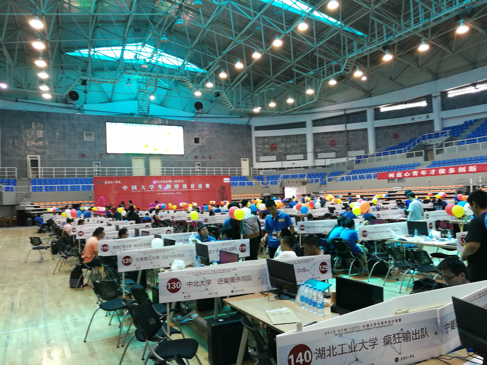
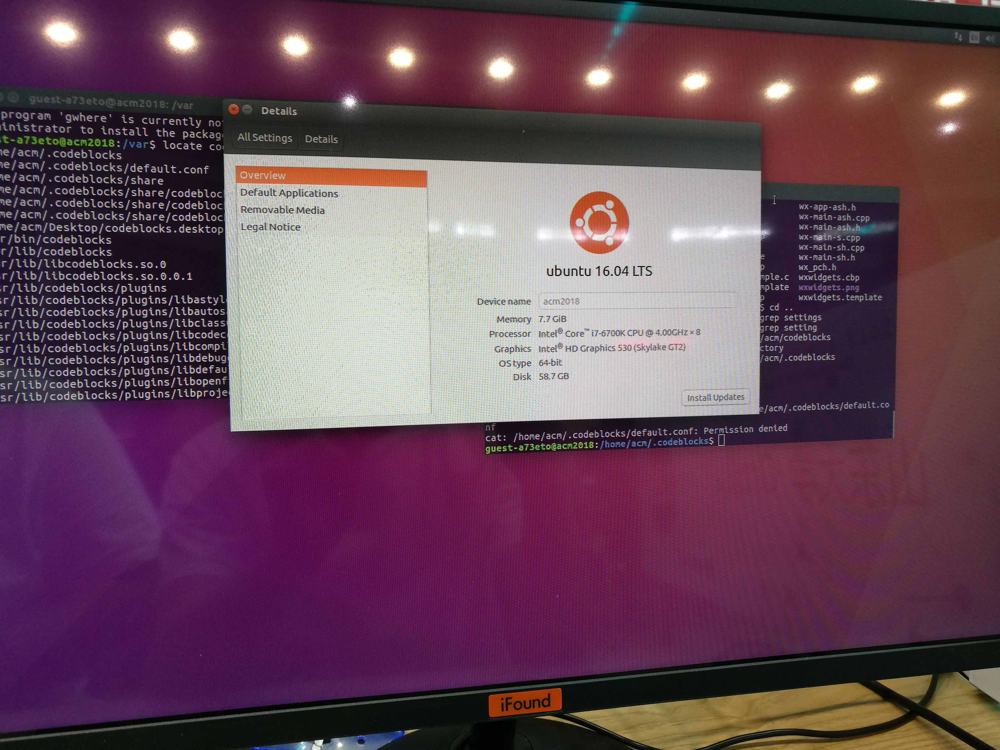
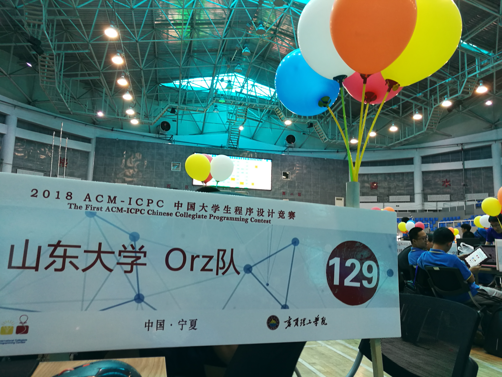
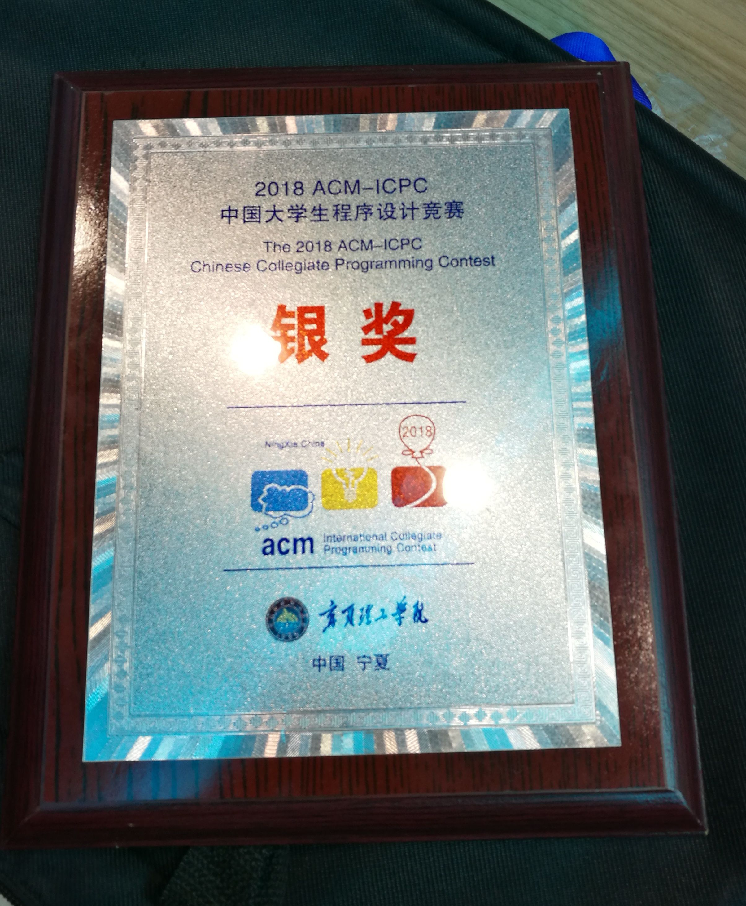
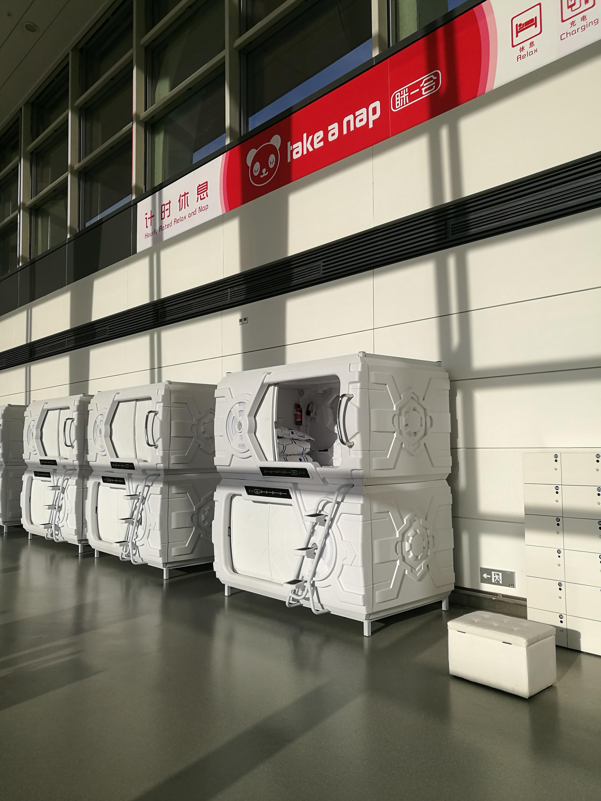

前言
- 之前为了省赛名额，学校大概20+支ACM队伍，打了一个多月的积分赛。依据这次积分赛的排名，以及自费参赛的志愿，来平分4月份实验室打的网络邀请赛获得的三个名额。
- 很幸运，我们队伍能够苟到一个名额。去获得一次类似区域赛规模的体验。
- 这是我第一次出去比赛，也是我们队。虽然不知道暑期集训后队伍何去何从，但我们依旧开心。
历程
- 睡了一次上铺*15h，到达清爽但是十分晒的宁夏，还有清一色的古铜色皮肤。

说实话是真的晒，某hmc学长觉得自己的脖子快被晒得变为进撃の巨人
酒店——星海湖宾馆，听说贵宾楼被星海湖环绕，但是我们入住较久的一号楼（喵喵喵？没感觉呀。。。
星海湖的一瞥
宁夏理工的一瞥
宁夏理工学院的体育馆，真气派！
（别人的学校：(

比赛环境（电脑配置）：I7-6700K、8G、256gSSD
- 但是配了一把全程我不顺手的键盘，
呵呵

- 但是配了一把全程我不顺手的键盘，
我们的队牌和气球和奖牌，
嘿嘿嘿

看我在机场发现了什么？
- 一个计时休息服务，感觉很赞呀
（孤陋寡闻的我

- 一个计时休息服务，感觉很赞呀
比赛
- 我们总共AC了5道题（C、B、D、H、A），总的来说罚时挺惨的。
- C题是一道签到题，有关字母表的加密。
- 但我一上来很没感觉，WA了3发，
还zz不会写%26了，第4发才AC，感觉队友要砍人？
- 但我一上来很没感觉，WA了3发，
- B题是法爷做的计算几何
- 此时刚做完C题的我有点智障，表示法爷能干自己上键盘
- 然后让出键盘，
苟蒻的代码手
- D题展dalao推的概率题
- 他说我们不帮他看题搞得他题意极迷
- 主要是搞题意特别久，然后他上键盘，WA两发后AC。
- H题，主要关于全序关系和贪心排序吧
- 就是说有n个怪兽，怪兽有hp和攻击力，每局开头hero先被仅存的怪兽围殴一轮减血，然后英雄可以选择攻击一个怪兽，对于某个怪兽的第i次攻击让它掉i滴血。Hero血无限厚，求打完所有怪兽英雄的最低耗血。
- 嘛，最小化问题，应该是贪心了，然后想到对第一关键字攻击力降序、第二关键字hp升序进行双关键字排序，然后就是选择攻击一个怪兽必然打到它over。
- 但是，错啦。于是甩锅，我开始翻A题。
- 队友成功推出是对权值（击打次数/攻击力）进行一个排序，AC。
- A题是一道有关于栈的先进后出的题，要求我们在实现栈的功能和维护一个栈内最大值。
- 这道题我怨气特别大，我当初第一眼想到维护一个最大值用的应该是优先队列，但是TLE了。
- 紧接着队友了解题意后很顺口地说，用”堆”维护啊！
- 然后，然后你们知道吗？一道维护前缀最大的水题，硬生生地，我被队友怂恿在赛场上现学”二叉堆”！
- 最后，WA了第12发后，队友开始放弃，我始终觉得pop的功能没实现好，加了栈优化，心灰意冷地交了一发，然后突然2s给我返回一个绿色的”Yes”，我(艹皿艹 )？
- 突然大叫一声，整个体育馆看了过来，志愿者过来问我：“请问有什么问题吗？”，我说：“没…没事，我A了道题”。
- 整个人都热血沸腾了，打ACM最激情的时刻，就是万念俱灰，你又不舍得放弃，不断优化、排错，最后返回Accepted的那一刻。你又有了开新题的冲动。
总结
- 没有总结，就是开心，诶，嘿嘿
- A题在两位队友准备放弃的时候我开始狂交题，所以罚时早已料得
- 但是，原以为是铜牌区的顶端，变成了银牌区尾部，你说开不开心？
人人拿牌系列- 还有，志愿者小姐姐真漂亮。